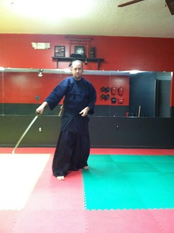

Home
Classes
About Sensi Lee
Schedule and Fees
Contact Us
 Sensei Lee Burgess has been in martial arts for over 37 years, starting at age 6 in England. He currently holds ranks of:
4th degree black belt in Shorei Ryu karate
3rd degree black belt in Shorin Ryu karate
2nd degree black belt in Shinto Yoshin Jiu Jitsu
1st degree black belt in Kodokan Judo
and a blue belt in Brazilian Jiu Jitsu
Sensei Lee also has a professional record of 19-1 in Muay Thai Kickboxing and a 4-1 record in MMA (Mixed Martial Arts).